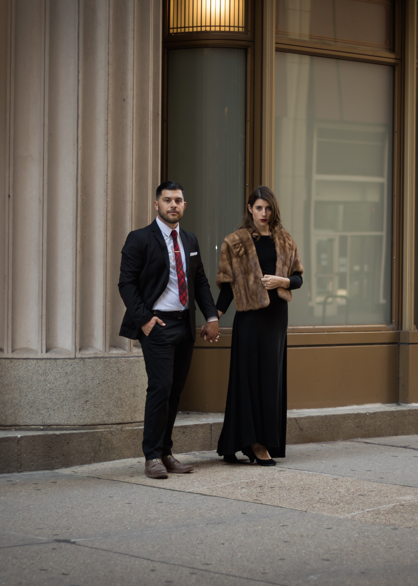
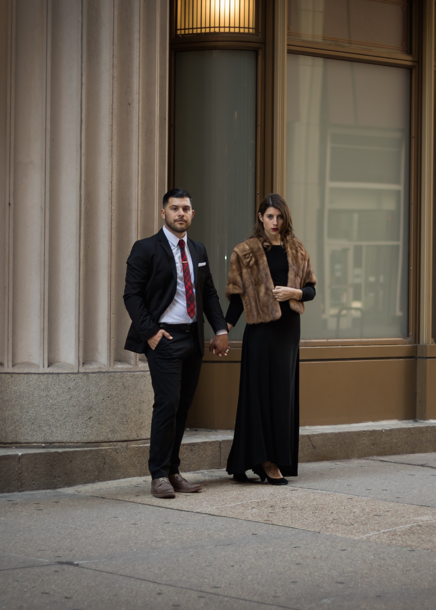

Natalie and Tristan met in late November of 2011 when he was next in line at the Starbucks register Natalie was working behind. Tristan had recently begun working across the street at a menswear boutique and would soon become a regular at Natalie’s store, seeing her for his daily Double Tall Americano. Natalie found Tristan handsome and endearing, which is way more than she could say for any other customer who came into her Starbucks because they were all horrible and the worst.
A month or so went by and Tristan’s daily coffee trip turned into TRIPS stopping in before and after his shift--this fact was not lost on Natalie. Finally after holding up too many lines and Natalie giving Tristan too many free Double Tall Americanos, Tristan asked Natalie out on a date and they have been going on dates ever since.
Natalie and Tristan live together in Chicago with their “doghter” (like “daughter”, but she’s a dog), Holiday. Natalie works as a manufacturer’s representative and Tristan is in web development. Tristan had worked as a commercial diver and traveled often all over the world for the majority of their relationship, so they very much appreciate their time at home together. Natalie likes to cook food and Tristan enjoys eating it. Tristan likes to make cocktails and Natalie enjoys drinking them. Natalie loves to love Tristan and Tristan loves to love Natalie. They cannot put into words how excited they are to be married and to celebrate with their dearest friends and family!
 
